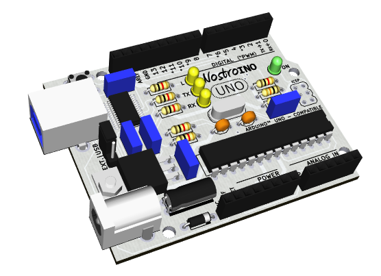

Este projeto é baseado no Arduino UNO revisão 3, sendo 100% compatível com esta plataforma. A compatibilidade dos pinos permite que sejam utilizados os mesmos shields desenvolvidos para a família Arduino.
Além da compatibilidade dos pinos, a placa do Nostroino UNO possui as mesmas dimensões da placa do Arduino UNO e mantem os principais elementos (conector de alimentação, conector USB, conector ICSP, microcontrolador, botão reset e furos de fixação) conforme o layout do original.
Criado por André Augusto Andreis e Diego Volpini, com o objetivo de disponibilizar uma alternativa de menor custo e de fácil montagem, o Nostroino UNO tem por filosofia o uso de componentes de encapsulamento PTH (Pin Through Hole), com exceção do chip FT232, responsável pela comunicação USB, o qual é fabricado apenas em encapsulamento SMD (Surface Mounted Devices).
Desta forma, o Nostroino UNO é ideal para estudantes que desejam construir sua própria placa de microcontrolador baseado no ATmega328.
Nostroino está sendo distribuído segundo os critérios da Open Source Hardware Association e de acordo com a Atribuição-CompartilhaIgual 3.0 Brasil (CC BY-SA 3.0 BR) da Creative Commons.
A documentação completa está disponível em https://github.com/nostroino/UNO